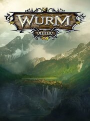

Wurm Online
Details
|  | |
| Playtime | 1m 0s |
| Last Activity | 8/20/2023 9:41:44 |
| Added | 8/27/2023 22:56:51 |
| Modified | 8/27/2023 22:57:18 |
| Completion Status | Played |
| Library | Steam |
| Source | Steam |
| Platform | PC (Windows) |
| Release Date | 12/12/2012 |
| Community Score | |
| Critic Score | 68 |
| User Score | |
| Genre | Adventure Indie Role-playing (RPG) Simulator |
| Developer | |
| Publisher | |
| Feature | Co-Operative Massively Multiplayer Online (MMO) Multiplayer |
| Links | Official Wikipedia YouTube Steam Twitch |
| Tag | |
Description
Welcome to Wurm, your new journey starts here.
Step into a world born around the idea that sandboxes should give ultimate freedom, Wurm Online aims to hold true to the original sandbox vision.
With sprawling seamless lands with no instances and a true open world experience Wurm Online offers limitless opportunities for you to write your story.
Stake your claim anywhere in the world and build fully custom structures, wage war on our PvP server with kingdom vs kingdom warfare, or focus on crafting and exploration on our PvE servers.
Since 2006 Wurm Online has pushed the boundaries of what it means to be a sandbox MMORPG and stood the test of time. Continually updated and evolving, this Steam launch brings fresh lands to explore and tame.

Wurm offers dedicated PvE and PvP servers, allowing you to choose how you want to play. Brave the wild lands of PvP where every player is an enemy waiting, or join the Freedom cluster and make your mark on the land.
Explore the vast and wild lands of Wurm by foot, cart, horse and ship. Build everything from simple horse drawn carts to mighty caravels to travel the seas. Build roads across the land to connect the world together.
Harvest raw materials from metal ores to wood, crops and clay. Refine them to turn them into useful materials and create items from tools and weapons to armour and furniture. Choice of material matters with different bonuses for each type.
Craft and trade tools, weapons, armour and resources, using skills such as blacksmithing, carpentry, tailoring, and more, with over 130 skills in an uncapped system you can become a master of any and all trades.
The world of Wurm has no instances, any change you make affects others and shows to them in real time. The world of Wurm starts completely untouched by humans, with nothing but wild untamed lands. It is your job to tame this land, and shape the land around you by digging, mining and clearing. Found your own settlement wherever you desire with non instanced, fully customisable building and player housing.
Found a kingdom and work with others to build and conquer on our dedicated PvP server. Connect and expand your empire by building towers and compete with other kingdoms for dominance!
Become a master craftsman, a priest of one of four deities with the ability to enchant tools and weapons and destroy foes, or a hunter finding the legendary creatures such as the Troll king, Forest Giant or even Dragons!
Step into a world born around the idea that sandboxes should give ultimate freedom, Wurm Online aims to hold true to the original sandbox vision.
With sprawling seamless lands with no instances and a true open world experience Wurm Online offers limitless opportunities for you to write your story.
Stake your claim anywhere in the world and build fully custom structures, wage war on our PvP server with kingdom vs kingdom warfare, or focus on crafting and exploration on our PvE servers.
Since 2006 Wurm Online has pushed the boundaries of what it means to be a sandbox MMORPG and stood the test of time. Continually updated and evolving, this Steam launch brings fresh lands to explore and tame.
Premium Subscription
Wurm Online is a Free-to-play sandbox MMORPG with a premium subscription. The premium subscription allows you to access such things as:- Allowing skill gain past 20, meaning the ability to ride more creatures such as horses, vehicles, and build even larger buildings
- Increased rare item chance
- Ability to invite villagers into your settlement
- And much more
Play Your Way
Wurm offers dedicated PvE and PvP servers, allowing you to choose how you want to play. Brave the wild lands of PvP where every player is an enemy waiting, or join the Freedom cluster and make your mark on the land.
Explore the World of Wurm
Explore the vast and wild lands of Wurm by foot, cart, horse and ship. Build everything from simple horse drawn carts to mighty caravels to travel the seas. Build roads across the land to connect the world together.
Collect Resources
Harvest raw materials from metal ores to wood, crops and clay. Refine them to turn them into useful materials and create items from tools and weapons to armour and furniture. Choice of material matters with different bonuses for each type.
Create Everything You Need
Craft and trade tools, weapons, armour and resources, using skills such as blacksmithing, carpentry, tailoring, and more, with over 130 skills in an uncapped system you can become a master of any and all trades.
Shape the world
The world of Wurm has no instances, any change you make affects others and shows to them in real time. The world of Wurm starts completely untouched by humans, with nothing but wild untamed lands. It is your job to tame this land, and shape the land around you by digging, mining and clearing. Found your own settlement wherever you desire with non instanced, fully customisable building and player housing.
Fight for dominance
Found a kingdom and work with others to build and conquer on our dedicated PvP server. Connect and expand your empire by building towers and compete with other kingdoms for dominance!
Make Your Mark
Become a master craftsman, a priest of one of four deities with the ability to enchant tools and weapons and destroy foes, or a hunter finding the legendary creatures such as the Troll king, Forest Giant or even Dragons!